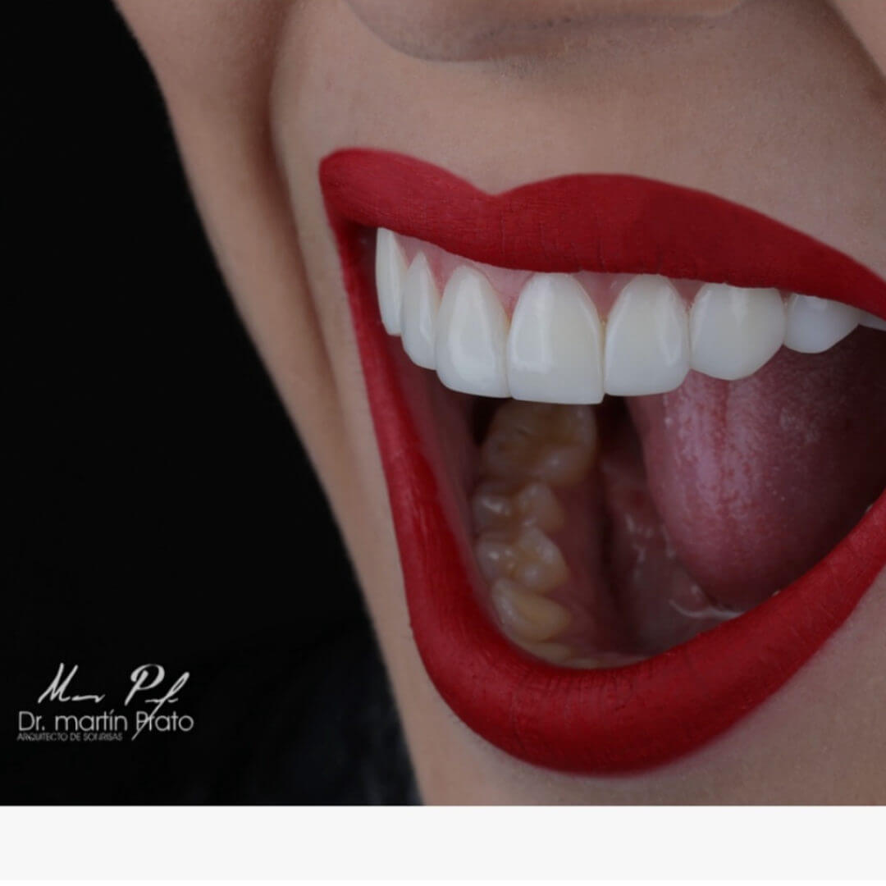
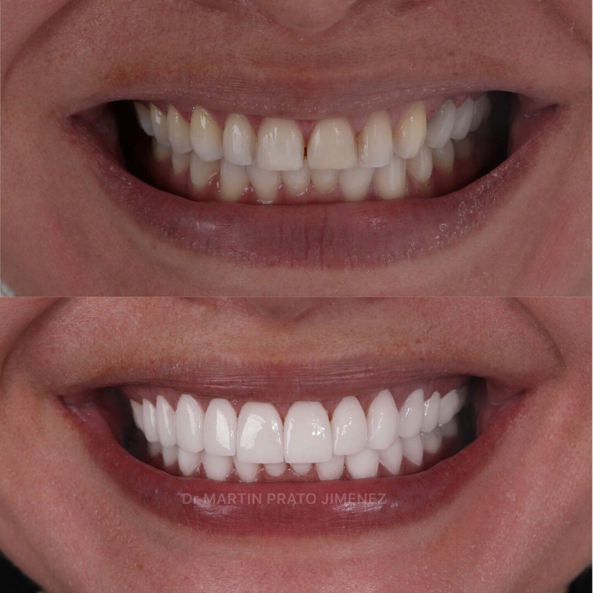

La periodoncia es la especialidad de la odontología que estudia la prevención, diagnóstico y tratamiento de las enfermedades que afectan a las encías, el cemento radicular y el hueso alveolar.
Las principales enfermedades periodontales son la gingivitis (inflamación con sangrado de las encías) y la periodontitis (destrucción del hueso de soporte), conocida como piorrea. Una gingivitis no tratada suele derivar en periodontitis y terminar con la pérdida de piezas dentales.
Se puede revertir la gingivitis desinflamando las encías, con buena higiene oral y eliminación del sarro. La periodontitis es irreversible ya que el hueso perdido no se puede recuperar.
⚠️ Factores de riesgo: Tabaco, estrés, apiñamiento dental, bruxismo, diabetes e hipertensión contribuyen al desarrollo de enfermedades periodontales. El tratamiento temprano es esencial.
Procedimientos que realizamos
◆ Profilaxis dental
◆ Raspado y Alisado Radicular
◆ Curetaje Abierto
◆ Frenilectomía – Frenectomía
◆ Gingivectomía – Gingivoplastía
◆ Diseño de Cenit Gingival
◆ Alargamiento de Corona
◆ Injertos de Encía y Hueso
◆ Recesiones Gingivales
◆ Cobertura de Raíz
◆ Injerto Libre
◆ Regeneración Tisular Guiada
Galería de Periodoncia
Resultados de nuestros tratamientos periodontales

